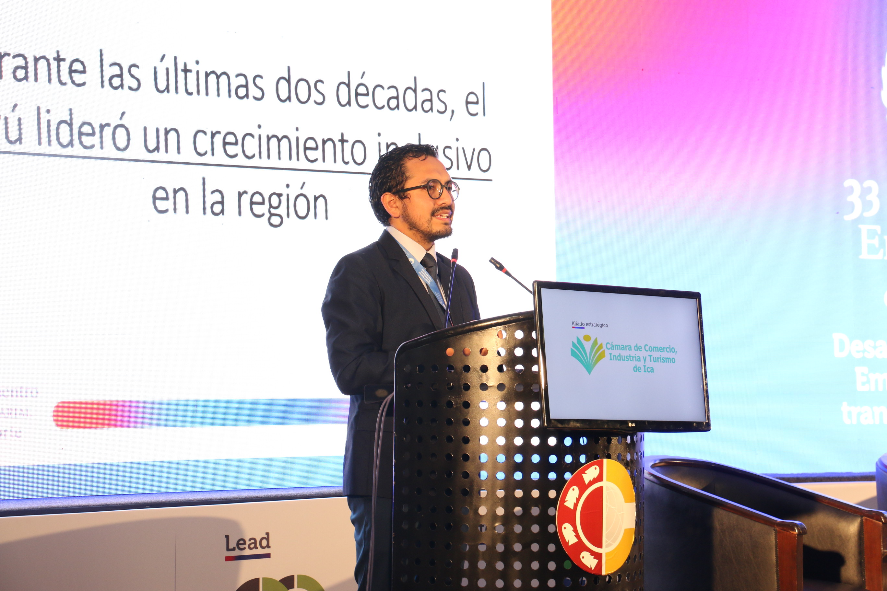

Experienced economist with 10 years in policy advocacy and think tanks. Specialized in economic analysis and the development of competitiveness and productivity policies. Proven track record in leading teams of economists and managing research projects. Passionate about integrating data science with policy analysis and leveraging data visualization to enhance public understanding and policy communication.
- Public Policy Manager (Apr 2023 - Present)
- Research Consultant, Natural Resources (Mar 2024 - Jul 2024)
- Interim General Manager (Feb 2023 - Mar 2023)
- Chief Economist (Sep 2021 - Jan 2023)
- Research Assistant (Jun 2020 - Mar 2021)
- Research Assistant (Oct 2019 - May 2020)
- Principal Economist (Jul 2016 - Jul 2019)
- Senior Economist (Jan 2015 - Jun 2016)
- Economist (Jan 2014 - Dec 2014)
Professional Experience
Peruvian Institute of Economics (IPE)
Economic Commission for Latin America and the Caribbean (ECLAC)
Peruvian Institute of Economics (IPE)
Heartland Alliance - Impact Division
Harris Behavioral Insights Parenting Lab
Peruvian Institute of Economics (IPE)
- Master of Public Policy (2021). Double Certificate in Data Analytics and Policy Analysis. Graduated with Honors
- Lincentiate in Economics (2016)
- Bachelor of Science in Economics (2014)
EDUCATION
University of Chicago, Harris School of Public Policy
Universidad del Pacífico
- Artificial Intelligence, Machine Learning, and Big Data for Executives (Jun 2024 - Aug 2024)
- Big Data vs. Good data (Jun 2024 - Jul 2024)
- Python Fundamentals for Macroeconomics and Finance (Jan 2024)
- Big Data vs. Good data (Ago 2023 - Set 2023). With Angelo Cozzubo
- Data & Programming for Public Policy I, (Spring 2021)
- Program Evalation (Spring 2021)
- Summer Coding Lab (Summer 2020)
- 20+ courses in statistics and microeconomics (Apr 2012 - Jul 2019)
TEACHING EXPERIENCE
Universidad del Pacífico - Public Management School
-
Adjunct Professor
Universidad Católica del Perú - Artificial Intelligence and Computational Methods Lab (QLAB)
-
Adjunct Professor
University of Chicago - Harris School of Public Policy
-
Graduate Teaching Assistant
Universidad del Pacífico - Department of Economics and Finance
-
Undergraduate Teaching Assistant